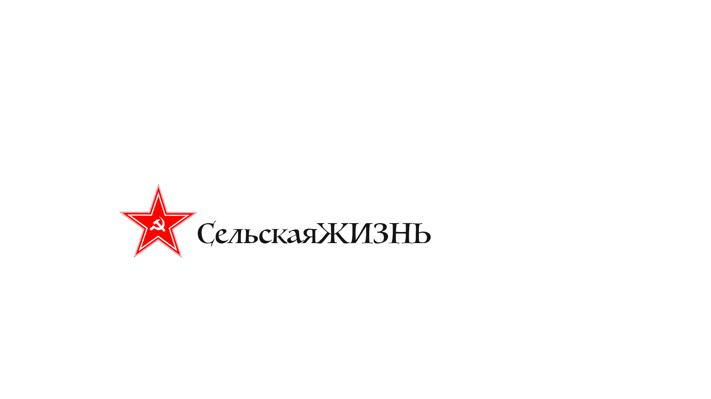

Газета «Сельская жизнь» — информационное издание
о проблемах агро-промышленного комплекса России.
Предназначена для деловых людей, занятых в сфере
сельского хозяйства, специалистов агро-промышленного
комплекса, жителей сёл.
Одна из старейших аграрных газет мира.
В советское время являлась ежедневным печатным
органом Народного комиссариата земледелия РСФСР и
Народного комиссариата земледелия СССР, а также
Зернотреста и Колхозцентра.
Тематика публикаций: политические обзоры,
аналитические статьи и информация о селе,
рекомендации прикладного характера.